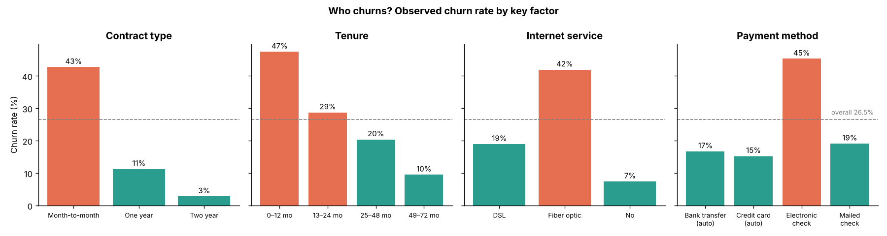

Customer churn prediction
A telecom company loses about 1 in 4 customers. I built a model that ranks customers by churn risk so the retention team can reach them before they leave, then packaged it as a tested pipeline with an interactive app.
Catches 79% of churners, up from 56% for the baseline. Contacting the riskiest 20% of customers reaches half of everyone who would leave.
- Data
- 7,043 telecom customers, 19 features
- Method
- Logistic regression tuned with cross-validation and a recall-first decision threshold, compared with Random Forest and XGBoost
- Engineering
- scikit-learn pipeline, saved model, Streamlit app, pytest suite, GitHub Actions CI
- Finding
- Month-to-month contracts, first-year customers and electronic-check payers churn the most